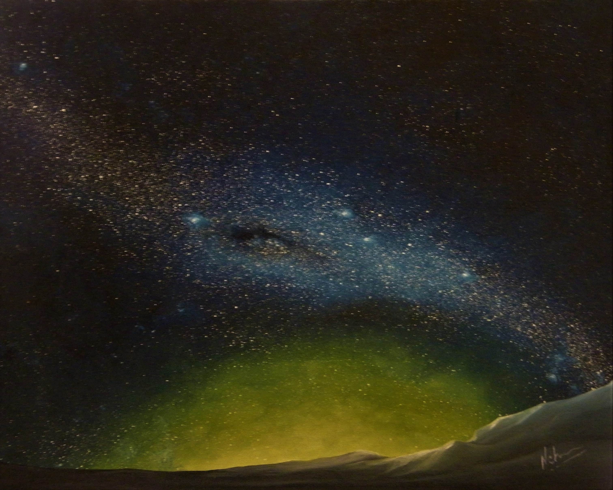

Paintings & Poetry by Artist-Author-Esoteric Neha Bisht
 Just like the physical body needs nourishment and healing, so also the soul needs nourishing and healing. This nourishment and healing of both soul and the physical body comes from healing energy of nature and natural elements. Colours, sound and the elements of nature are the core instruments of Soul Healing. The energy of colours and elements in the environment embalms the soul, nourishes and heals it. All the 7 chakras embody a colour energy. Very often the colours we seek are the very energies that our persona has an imbalance of. Hence, the soul seeks that energy and attracts us more towards that colour. It can be understood as the magnetic attraction between polarities. Love is the most potent healing energy. All is born of love and ends in love. That is the divine order. To heal and nourish the soul, one should bring into their environment, those colours and elements that the soul needs, in order to balance and empower itself. It is important to act from a space of compassion and love. This healing is a process that is unique to each individual. And it starts by listening to what your soul is saying. If your soul wants red, give it red. If your soul wants snow, give it snow. Bring it into your environment through art. Surround yourself with beauty and love. I create nature. My soul landscapes embody a distinct colour energy. My art is born of love and its myriad emotions that flow in me.